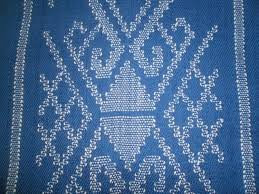

An eminent geographical indication, panchachuli saree find their home in the state of Uttarakhand.
The Panchachuli weave is a traditional style of weaving from the Panchachuli mountain range in Uttarakhand, India. The weave is inspired by the Himalayan peaks, and the local sheep-rearing practices and climate of Uttarakhand have contributed to the natural development of the region's woolen industry.
Panchachuli sarees are made by hand using sheep, merino, pashmina, and silk wool, and natural dyes. The wool base is woven and knitted, and the dyes are vegetable-based to create a rich color palette of crimson, lapis blue, and merigold. The Panchachuli women weavers use two types of looms, the Pit loom and the vertical upright loom, to weave and knit the wool
